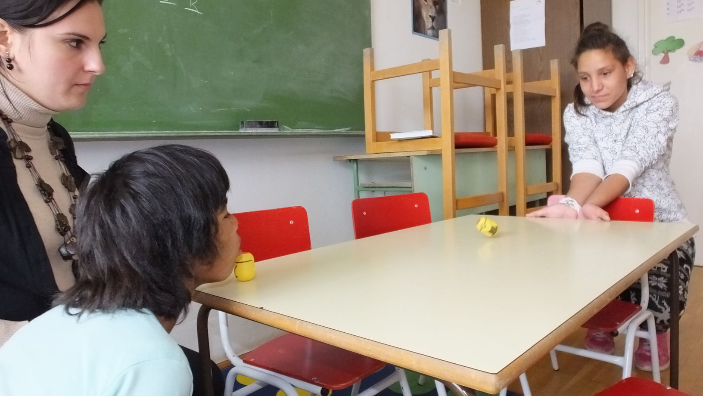

- Logopédia
Intézményünkben a logopédiai fejlesztés osztályszinten, kiscsoportos
formában történik. A csoportok alakítását előzetes logopédiai
diagnosztikai vizsgálat előzi meg, majd a logopédiai kórképek alapján
soroljuk be a tanulóinkat.
A fejlesztő órákat különböző, elsősorban saját készítésű eszközökkel
igyekszünk színesebbé varázsolni, amelyeket ajak- és
nyelvgyakorlatoknál, hangkialakításoknál, rezonancia- és
légzőgyakorlatoknál használunk.
Iskolánkban a következő logopédiai terápiákat alkalmazzuk:
- artikulációs / pöszeség terápia
- dadogó terápia
- orrhangzós terápia
- diszfónia terápia
 Logopédiai szoba
Logopédiai szoba
|
|
|
|
|
 Ajakgyakorlat
|
|
Légző-fúvó gyakorlatok
|
|
- Szomatopedagógia
Iskolánkban a szomatopedagógiai fejlesztés osztályszinten, kiscsoportos
formában történik.
Tanulóink egy részletes szomatopedagógiai vizsgálaton esnek át a
mozgásfejlesztés megkezdése előtt. Az óráink célja nemcsak a fejlesztés,
hanem azon fontos feladat is, miszerint a mozgás élmény- és örömteli
tevékenységgé formálhassuk tanulóink számára.
- Hittan
„Menjetek, és tegyetek tanítványommá minden népet.”
Az egyház célja és feladata, hogy Jézus evangéliumának hirdetője legyen.
Minden megkeresztelt ember felelőssége, hogy a jó hírt elvigye
embertársaihoz. A katekézis, vagy is a hitoktatás, ennek a szolgálatnak
a része. A gyermekek, és fiatalok olyan hitre való nevelése, amely
leginkább a keresztény tanításnak rendszeres átadásában történik. Nekünk
hitoktatóknak az a célunk, hogy a ránk bízott gyermekek a keresztény
örömhírt megértsék, és életté tudják váltani. Iskolánkban az alsó
tagozatos gyerekek játékos formában tanulják meg, hogy a teremtés Isten
ajándéka. Hogy ők is Isten családjához tartoznak, ahol imádkoznak és
ünnepelnek, gazdagítják érzelmi világukat. Később ismerkednek a
Szentírással, az Ó-, és Újszövetségi részekkel. Arra törekszünk, hogy
ismerjék fel a gyerekek, hogy Isten üzenete a Bibliában nekik is szól,
és hagyatkozzanak a Mennyei Atya gondviselő jóságára.
…Negyedik éve járt hittan órára egy kislány, akinél a hitébredés
egész korán tapasztalható volt. Hamar összeszedetten imádkozott,
ragyogott a tekintete minden órán. Év végén volt, hogy elmondta mi is
történt vele matematika órán. Dolgozatírás előtt állt. Nagyon készült az
év végi utolsó megmérettetésre, mert szeretett volna kitűnő lenni. Ehhez
azonban ötösre kellett a dolgozatát megírnia. Édesanyjával nagyon sokat
tanultak. Megkapta a feladatokat és hozzálátott a munkához. Egy feladat
azonban nehézséget jelentett neki. Letette a ceruzát és elkezdett
imádkozni. ( Kicsit szomorú volt, hogy nem lesz a dolgozata ötös.)
Azonban nemsoká eszébe jutott a megoldás és mielőtt beszedték a
dolgozatot, betudta fejezni feladatát. És a dolgozat ötös lett. Ezután
pedig, azért imádkozott, hogy hálát adjon…
A hittanóra az erkölcsi nevelést kell, hogy szolgálja. Hogy a gyerekek
tanuljanak meg másoknak örömet szerezni, megbocsátani egymásnak,
legyenek türelmesek. Legyen céljuk a jó cselekedetek gyakorlása.
Hinnünk kell abban, hogy egyetlen jó szándékú szavunk, biztatásunk,
figyelmeztetésünk sem hiábavaló.
Szalizi Szt. Ferenc mondta: „a gyermekekhez kis pohár bölcsesség,
egy hordó okosság, és tengernyi türelem kell”.
Szopkó Ilona
hittan tanár
{kind=link}
{kind=link}
{kind=link}
{kind=link}
{kind=link}
{kind=link}
{kind=link}
{kind=link}

{kind=link}
{kind=link}
{kind=link}
{kind=link}